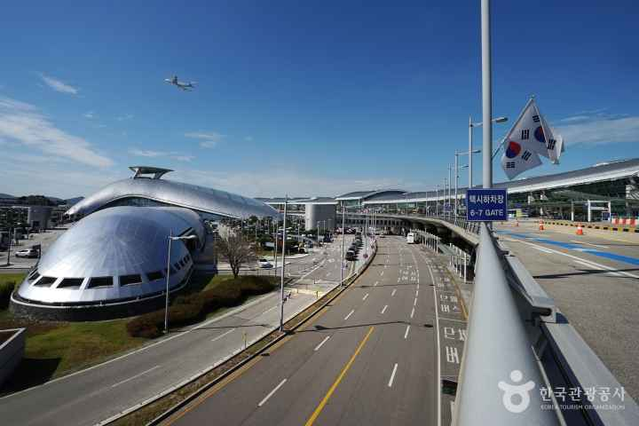

[한중수교 34년⑨] 무비자 중국인 10만명, 무단이탈은 21명이었다
2025년 9월 29일 시작한 중국인 단체관광 무비자, 2026년 12월 31일까지 연장됐다
무비자 입국 10만4369명에 단체전자비자 51만2998명, 이탈률은 0.02%다
중국도 한국인 30일 무비자를 2026년 12월 31일까지 맞췄다
한중 관계에서 가장 먼저 열리고 가장 먼저 닫히는 것이 사람이 오가는 길이다. 2025년 9월 29일 한국이 중국인 단체관광객의 무비자 입국을 한시로 허용했다. 1년이 지나 그 결과를 숫자로 볼 수 있다.

※ 이 연재는 2024년 인천투데이에 실린 「한중수교 32년」 연재를 잇는다. 논지는 이어받되 수치와 사실은 2026년 10월 기준으로 다시 확인해 썼다.
1. 10만4369명과 21명
법무부 집계를 보면 2025년 9월 29일부터 2026년 6월 21일까지 무비자로 들어온 중국인은 10만4369명이다. 같은 기간 단체전자비자로 들어온 사람은 51만2998명이다.
무비자가 차지하는 비중은 2026년 4월 13.6%에서 16.9%로 올랐다. 전체 단체관광객 여섯 가운데 하나가 비자 없이 들어왔다.
무비자 입국자 가운데 무단이탈은 21명이다. 이탈률 0.02%다. 제도를 열 때 가장 크게 걱정했던 대목인데 실제 숫자는 그랬다.
2. 두 나라가 기간을 맞췄다
이 제도는 2026년 6월 30일 끝날 예정이었다. 6개월 더 늘려 2026년 12월 31일까지 가기로 했다.
법무부는 시행 기간을 "우리나라 국민에 대한 중국의 무비자 입국 허용 기간과 동일하게 적용한다"고 밝혔다. 중국은 2025년 11월 한국인에 대한 30일 무비자 입국을 2026년 12월 31일까지 연장한다고 발표했다. 두 나라가 날짜를 맞춘 것이다.
한쪽이 열면 다른 쪽도 연다. 한쪽이 닫으면 다른 쪽도 닫힌다. 날짜를 같이 둔다는 것은 그 연동을 제도로 인정했다는 뜻이다.
3. 아직 단체만 열려 있다
열린 것은 단체관광이다. 개별 자유여행의 무비자는 여전히 제한적이다.
중국인 관광의 흐름은 이미 단체에서 개별로 옮겨 갔다. 단체 버스로 면세점을 도는 방식에서 혼자 또는 둘이 찾아다니는 방식으로 바뀐 지 오래다. 열린 문과 실제 수요가 어긋나 있다.
무비자 단체관광으로 방한이 10% 늘어나는 데 그쳤다는 분석이 나온 까닭도 여기 있다. 문을 여는 방식이 수요의 모양과 맞아야 한다.
4. 일본과 견주면
같은 기간 다른 나라 관광객은 어땠나.
2026년 1월부터 7월까지 한국을 찾은 외국인은 1280만명으로 지난해 같은 기간보다 21.3% 늘었다. 그 가운데 가장 많은 것은 일본인으로 228만명, 18.8% 늘었다. 같은 기간 외국인이 한국에서 카드로 쓴 돈은 12조859억원으로 48.3% 늘었다.
일본은 비자 없이 오간 지 오래다. 중국은 2025년 9월에야 단체부터 열었다. 출발선이 다르다.
5. 길은 셋인데 속도가 다르다
중국에서 한국으로 오는 길은 셋이다.
하늘길은 2026년 5월 27일 한중 항공회담에서 운수권이 주 70회 늘었다. 여객 주 608회에서 664회가 됐다. 2019년 이후 7년 만이다.
뱃길은 ④편에서 본 대로 2025년 여객 41만4000명으로 2019년 103만명의 40% 수준이다. 2026년 9월 8일 인천항에 민관 협의체가 섰다.
제도의 길은 무비자다. 2025년 9월 29일 열려 2026년 12월 31일까지 간다.
셋이 같은 속도로 가지 않는다. 비자를 풀어도 배가 없으면 안 오고, 배가 있어도 비자가 막히면 못 온다.
6. 12월 31일 뒤
지금 정해진 것은 2026년 12월 31일까지다. 그다음은 정해지지 않았다.
두 나라가 날짜를 맞춰 두었으니 연장도 함께 결정될 가능성이 크다. 다만 그 결정은 관광 수요가 아니라 다른 사정에 흔들려 왔다. 2016년 이후의 경험이 그랬다.
이탈률 0.02%는 제도를 유지할 근거가 된다. 열어 보니 걱정했던 일이 일어나지 않았다는 기록이기 때문이다. 수교 34년 동안 한중 사이에서 가장 먼저 닫히던 것이 사람의 길이었다. 그 길이 숫자로 안전을 증명한 것은 이번이 처음에 가깝다.
다음 편에서는 미국과 중국 사이에서 한국이 선 자리를 본다.
참고문헌
·"중국인 단체관광 무비자 6개월 연장… 한·중 무비자 연말까지 동기화", 상하이방, 2026년 6월 30일(법무부 집계 인용). https://shanghaibang.com/ne/ne0402/ne0303/2026/06/30/1506362/
·"정부, 9월 29일부터 중국인 단체관광객 '무비자 입국' 한시 허용", 코리아넷, 2025년 9월. https://www.korean-culture.org/koreanet/view.do?seq=1052171
·"中 단체관광객 무비자 해도 방한 증가 10% 불과", 헤럴드경제. https://biz.heraldcorp.com/article/10548503
·"한국 찾은 日관광객 늘어난 이유", 서울신문, 2026년 8월 31일(문화체육관광부 집계, 2026년 1~7월).
·"한국~중국 하늘길 넓어진다… 항공 운수권 주 70회 증대", 한국일보, 2026년 6월 4일.
·"한중 카페리 여객 103만명 회복 목표", 아시아경제, 2026년 9월 8일.
※ 이 기사는 AI 프로그램 클로드를 활용해 작성했습니다.
관련기사
- [한중수교 34년⑩] 한한령 10년, 업계가 보는 해제 기준은 "1만석 단독 콘서트"
- [한중수교 34년⑧] 부산에서 한국 갯벌이 22% 넓어졌고, 황해를 묶는 선언이 나왔다
- [한중수교 34년⑪] 중국은 일본 총리 직함을 뺐고, 한국 대통령과는 90분을 썼다
- [한중수교 34년⑦] 전국 외투기업의 53%가 인천경제자유구역에 있다
저작권자 © AI경세제민 무단전재 및 재배포, AI학습 및 활용 금지